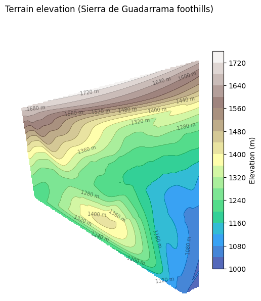
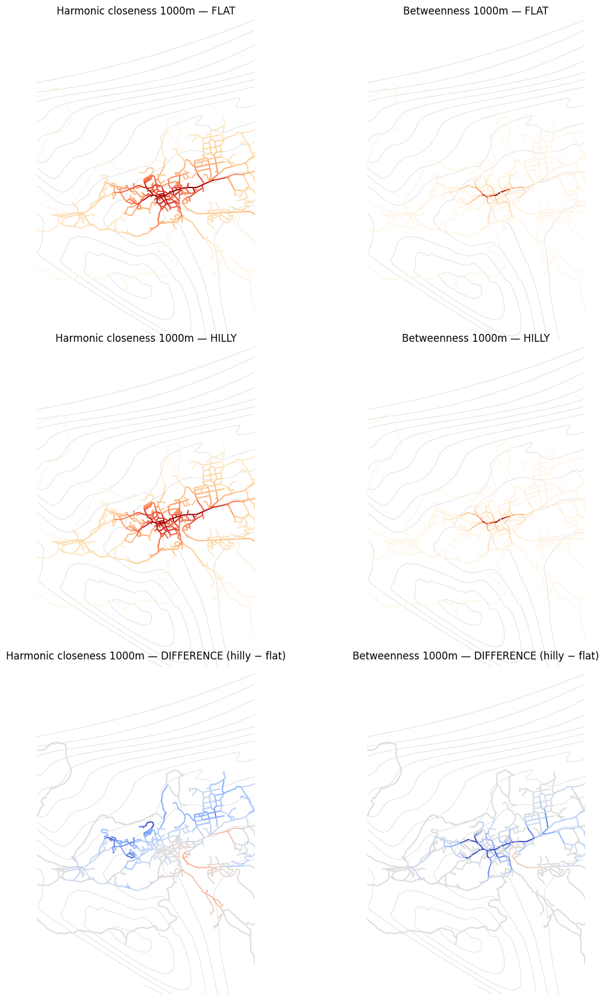

import geopandas as gpd
import matplotlib.pyplot as plt
import numpy as np
import shapely
from cityseer.metrics import networks
from cityseer.tools import graphs, io
from scipy.stats import spearmanr
Elevation effects on centrality
Important
3D elevation support requires cityseer v4.24.0 or later.
Compare centrality results with and without Z coordinates (elevation). When nodes have z attributes, cityseer automatically applies Tobler’s hiking function during pathfinding — uphill segments become costlier and gentle downhill segments become slightly cheaper. This reshapes which paths are “shortest” and therefore changes centrality values.
Load the road network
Load a hilly subset of Madrid’s road network with real 3D geometries (Sierra de Guadarrama foothills). The dataset is loaded twice: once preserving the Z coordinates (hilly) and once stripping them (flat).
import copy
edges_raw = gpd.read_file("data/madrid_streets/street_network_3d.gpkg")
edges_raw = edges_raw.explode(index_parts=False)
print(f"Loaded {len(edges_raw)} edges, has_z={edges_raw.geometry.iloc[0].has_z}")
# Build primal graph once (with Z), then simplify
G_primal = io.nx_from_generic_geopandas(edges_raw)
G_primal = graphs.nx_remove_filler_nodes(G_primal)
G_primal = graphs.nx_remove_dangling_nodes(G_primal)
# Report elevation range
zs = [d["z"] for _, d in G_primal.nodes(data=True) if "z" in d]
print(
f"Elevation range: {min(zs):.0f}m – {max(zs):.0f}m (spread: {max(zs) - min(zs):.0f}m)"
)
# HILLY dual — preserves Z
G_hilly = graphs.nx_to_dual(G_primal)
# FLAT dual — strip Z from a copy of the same primal graph
G_flat_primal = copy.deepcopy(G_primal)
for node_idx, node_data in G_flat_primal.nodes(data=True):
node_data.pop("z", None)
for u, v, edge_data in G_flat_primal.edges(data=True):
if "geom" in edge_data:
edge_data["geom"] = shapely.force_2d(edge_data["geom"])
G_flat = graphs.nx_to_dual(G_flat_primal)INFO:cityseer.tools.graphs:Merging parallel edges within buffer of 1.Loaded 1492 edges, has_z=TrueINFO:cityseer.tools.graphs:Removing filler nodes.
INFO:cityseer.tools.graphs:Removing dangling nodes.
INFO:cityseer.tools.graphs:Removing filler nodes.
INFO:cityseer.tools.graphs:Converting graph to dual.
INFO:cityseer.tools.graphs:Preparing dual nodes
INFO:cityseer.tools.graphs:Preparing dual edges (splitting and welding geoms)Elevation range: 945m – 1706m (spread: 761m)INFO:cityseer.tools.graphs:Converting graph to dual.
INFO:cityseer.tools.graphs:Preparing dual nodes
INFO:cityseer.tools.graphs:Preparing dual edges (splitting and welding geoms)Elevation profile
Visualise the terrain elevation across the network using contours interpolated from the node Z values.
from scipy.interpolate import griddata
# Extract node positions and elevations from primal graph
xs = np.array([d["x"] for _, d in G_primal.nodes(data=True)])
ys = np.array([d["y"] for _, d in G_primal.nodes(data=True)])
zs = np.array([d["z"] for _, d in G_primal.nodes(data=True)])
# Create grid and interpolate
xlim = (437400, 442200)
ylim = (4519850, 4527150)
grid_x, grid_y = np.mgrid[xlim[0] : xlim[1] : 200j, ylim[0] : ylim[1] : 200j]
grid_z = griddata((xs, ys), zs, (grid_x, grid_y), method="cubic")
fig, ax = plt.subplots(1, 1, figsize=(7, 7))
contour_filled = ax.contourf(
grid_x, grid_y, grid_z, levels=20, cmap="terrain", alpha=0.8
)
contour_lines = ax.contour(
grid_x, grid_y, grid_z, levels=20, colors="k", linewidths=0.3, alpha=0.5
)
ax.clabel(contour_lines, inline=True, fontsize=7, fmt="%.0f m")
plt.colorbar(contour_filled, ax=ax, label="Elevation (m)", shrink=0.8)
ax.set_xlim(xlim)
ax.set_ylim(ylim)
ax.set_aspect("equal")
ax.set_title("Terrain elevation (Sierra de Guadarrama foothills)")
ax.axis(False)
plt.show()
Compute centrality — flat vs hilly
Run shortest-path closeness and betweenness at a 1000m threshold for both versions. Use network_structure_from_nx to prepare the data structures and node_centrality_simplest to compute the centralities.
distances = [1000]
# Flat
nodes_flat, _edges_flat, net_flat = io.network_structure_from_nx(G_flat)
nodes_flat = networks.node_centrality_simplest(
network_structure=net_flat,
nodes_gdf=nodes_flat,
distances=distances,
compute_closeness=True,
compute_betweenness=True,
)
# Hilly
nodes_hilly, _edges_hilly, net_hilly = io.network_structure_from_nx(G_hilly)
nodes_hilly = networks.node_centrality_simplest(
network_structure=net_hilly,
nodes_gdf=nodes_hilly,
distances=distances,
compute_closeness=True,
compute_betweenness=True,
)INFO:cityseer.tools.io:Preparing node and edge arrays from networkX graph.
INFO:cityseer.graph:Edge R-tree built successfully with 2301 items.
INFO:cityseer.metrics.networks:Computing node centrality (simplest).
INFO:cityseer.metrics.networks: Full: 1000m
INFO:cityseer.tools.io:Preparing node and edge arrays from networkX graph.
INFO:cityseer.graph:Edge R-tree built successfully with 2301 items.
INFO:cityseer.metrics.networks:Computing node centrality (simplest).
INFO:cityseer.metrics.networks: Full: 1000mCompare results
Align nodes by position and visualise the flat vs hilly centrality results side by side, along with the difference.
from scipy.interpolate import griddata
d = 1000
harm_key = f"cc_harmonic_{d}_ang"
betw_key = f"cc_betweenness_{d}_ang"
# Same topology so indices align directly
diff_gdf = nodes_flat.copy()
diff_gdf["harm_diff"] = nodes_hilly[harm_key].values - nodes_flat[harm_key].values
diff_gdf["betw_diff"] = nodes_hilly[betw_key].values - nodes_flat[betw_key].values
# Zoom extent
xlim = (438200, 441600)
ylim = (4521000, 4526000)
lw = 1.5
# Prepare elevation contour grid
xs = np.array([nd["x"] for _, nd in G_primal.nodes(data=True)])
ys = np.array([nd["y"] for _, nd in G_primal.nodes(data=True)])
zs = np.array([nd["z"] for _, nd in G_primal.nodes(data=True)])
grid_x, grid_y = np.mgrid[xlim[0] : xlim[1] : 200j, ylim[0] : ylim[1] : 200j]
grid_z = griddata((xs, ys), zs, (grid_x, grid_y), method="cubic")
fig, axes = plt.subplots(
3, 2, figsize=(14, 21), gridspec_kw={"hspace": 0.02, "wspace": 0.02}
)
for ax in axes.flat:
ax.contour(grid_x, grid_y, grid_z, levels=15, colors="k", linewidths=0.3, alpha=0.3)
# Row 1: Flat
nodes_flat.plot(ax=axes[0, 0], column=harm_key, cmap="OrRd", linewidth=lw, legend=False)
axes[0, 0].set_title(f"Harmonic closeness {d}m — FLAT")
axes[0, 0].set_xlim(xlim)
axes[0, 0].set_ylim(ylim)
axes[0, 0].set_aspect("equal")
axes[0, 0].axis(False)
nodes_flat.plot(ax=axes[0, 1], column=betw_key, cmap="OrRd", linewidth=lw, legend=False)
axes[0, 1].set_title(f"Betweenness {d}m — FLAT")
axes[0, 1].set_xlim(xlim)
axes[0, 1].set_ylim(ylim)
axes[0, 1].set_aspect("equal")
axes[0, 1].axis(False)
# Row 2: Hilly
nodes_hilly.plot(
ax=axes[1, 0], column=harm_key, cmap="OrRd", linewidth=lw, legend=False
)
axes[1, 0].set_title(f"Harmonic closeness {d}m — HILLY")
axes[1, 0].set_xlim(xlim)
axes[1, 0].set_ylim(ylim)
axes[1, 0].set_aspect("equal")
axes[1, 0].axis(False)
nodes_hilly.plot(
ax=axes[1, 1], column=betw_key, cmap="OrRd", linewidth=lw, legend=False
)
axes[1, 1].set_title(f"Betweenness {d}m — HILLY")
axes[1, 1].set_xlim(xlim)
axes[1, 1].set_ylim(ylim)
axes[1, 1].set_aspect("equal")
axes[1, 1].axis(False)
# Row 3: Difference (coolwarm, symmetric around zero)
vmax_h = np.abs(diff_gdf["harm_diff"]).max()
diff_gdf.plot(
ax=axes[2, 0],
column="harm_diff",
cmap="coolwarm",
linewidth=lw,
legend=False,
vmin=-vmax_h,
vmax=vmax_h,
)
axes[2, 0].set_title(f"Harmonic closeness {d}m — DIFFERENCE (hilly − flat)")
axes[2, 0].set_xlim(xlim)
axes[2, 0].set_ylim(ylim)
axes[2, 0].set_aspect("equal")
axes[2, 0].axis(False)
vmax_b = np.abs(diff_gdf["betw_diff"]).max() / 4
diff_gdf.plot(
ax=axes[2, 1],
column="betw_diff",
cmap="coolwarm",
linewidth=lw,
legend=False,
vmin=-vmax_b,
vmax=vmax_b,
)
axes[2, 1].set_title(f"Betweenness {d}m — DIFFERENCE (hilly − flat)")
axes[2, 1].set_xlim(xlim)
axes[2, 1].set_ylim(ylim)
axes[2, 1].set_aspect("equal")
axes[2, 1].axis(False)
plt.show()
Rank correlation
Compute Spearman rank correlations and mean percentage changes to quantify how much elevation affects the centrality rankings.
print(f"{'Metric':<35} {'Spearman ρ':>10} {'Mean % change':>15}")
print("-" * 65)
for metric, label in [
("harmonic", "Angular harmonic closeness"),
("betweenness", "Angular betweenness"),
]:
key = f"cc_{metric}_{d}_ang"
flat_vals = nodes_flat[key].values
hilly_vals = nodes_hilly[key].values
mask = (flat_vals > 0) & (hilly_vals > 0)
rho, _ = spearmanr(flat_vals[mask], hilly_vals[mask])
pct_change = (
np.mean(np.abs(hilly_vals[mask] - flat_vals[mask]) / flat_vals[mask]) * 100
)
print(f"{label} {d}m{'':<5} {rho:>10.4f} {pct_change:>14.1f}%")Metric Spearman ρ Mean % change
-----------------------------------------------------------------
Angular harmonic closeness 1000m 0.9946 6.2%
Angular betweenness 1000m 0.9981 9.3%Summary
This notebook demonstrated how elevation (Z coordinates) affects centrality results. When 3D geometries are present, cityseer automatically applies Tobler’s hiking function, which penalises uphill travel and slightly rewards gentle downhill slopes. The effect is asymmetric — walking uphill costs more than walking downhill — which shifts betweenness patterns in hilly terrain.
Next steps:
- To calculate angular centralities without elevation, see Angular Centrality.
- To calculate metric (shortest-path) centralities, see Metric Centrality.
- To compute centralities directly from OpenStreetMap data, see OSM Centrality.